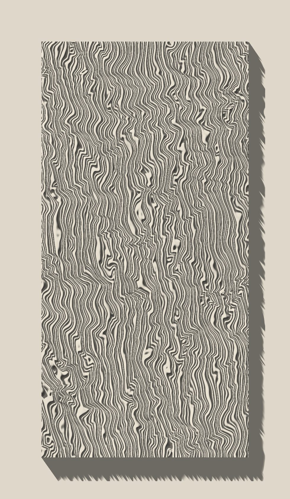
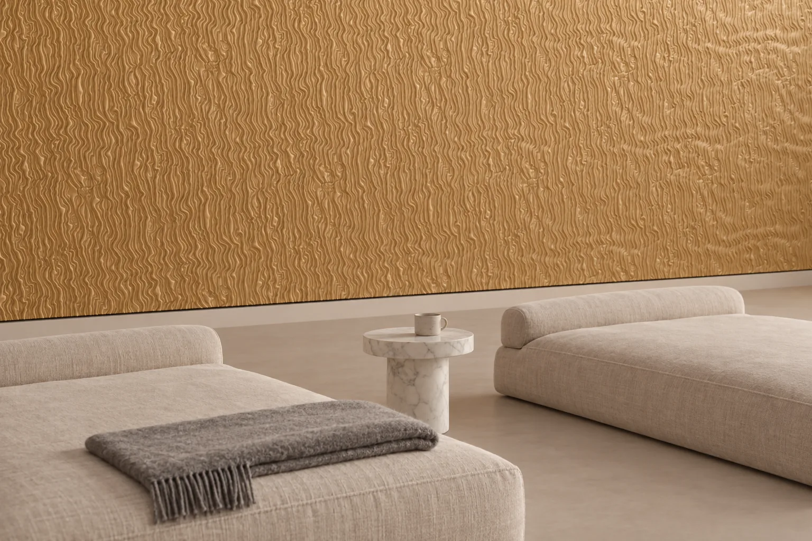
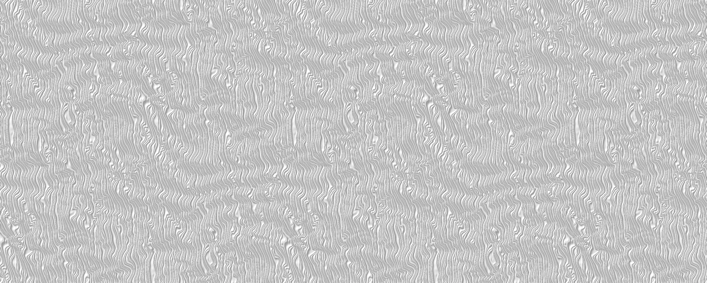
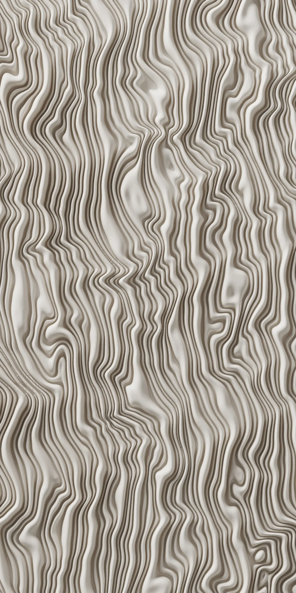
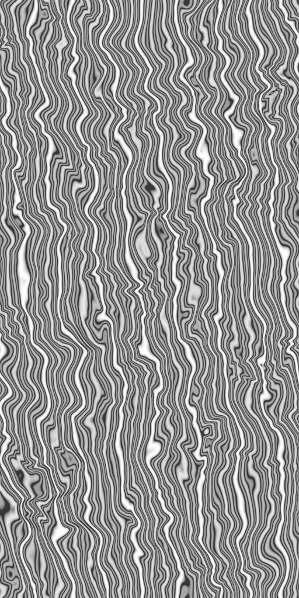
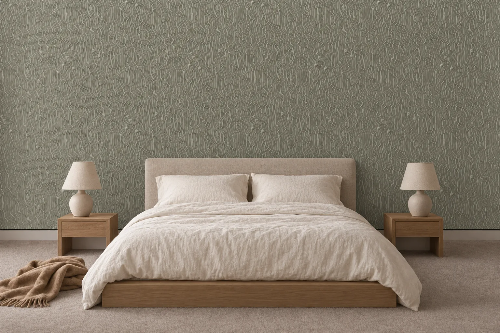
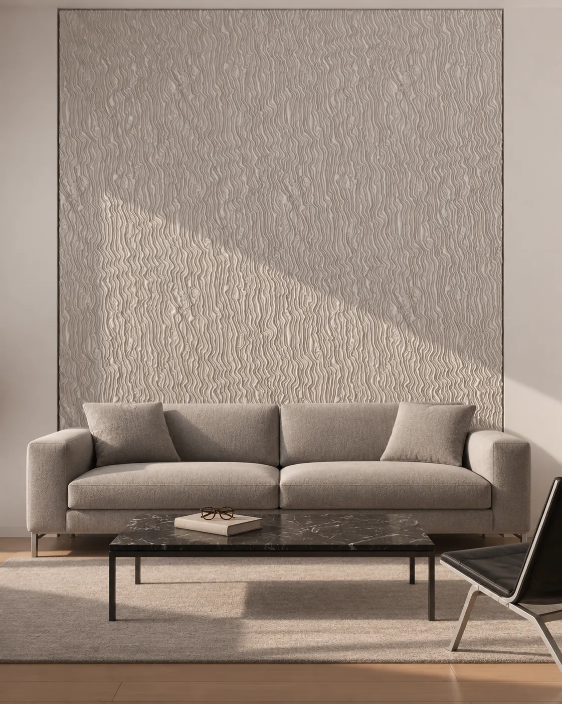
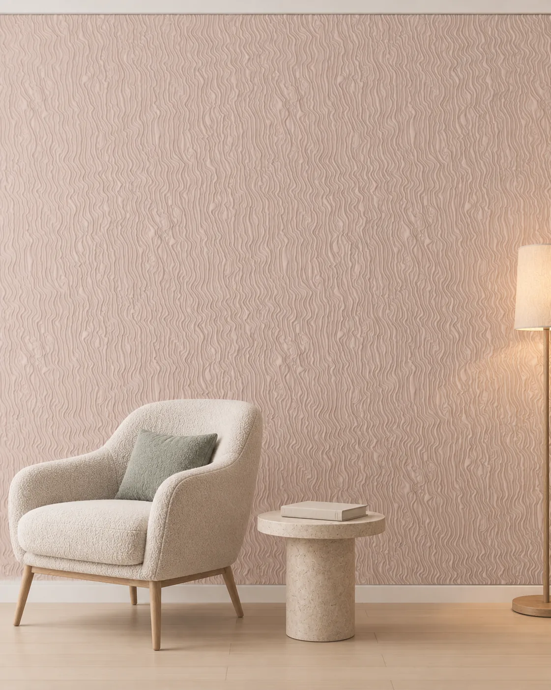

Glissando
A surface of drifting fibres. Upright panels are laid with a half-height offset; the relief rises from a 3 mm ground to 14 mm, and the fibres sharpen as the light comes round to the side.




- Size
- 600 × 1200 mm
- Relief
- 14 mm (3 mm ground)
- Layout
- Half-height running bond
- Material
- Lumina PMAG™ (polymer-modified composite gypsum)
- Surface
- Paint-ready, or with an artisan finish
- Fixing
- Polymer adhesive
- Lead time
- 4 weeks after contract and advance (up to 50 m²), ex-works Sapanca (EXW)
- Minimum order
- 7.5 m²
The pattern
Glissando is a surface of drifting fibres. The fibres run along the panel at a slight angle and thicken and thin as they go; the surface recalls the lines of a cloth or of moving water. It has no motif at all, only rhythm.
The relief rises from a 3 mm ground to 14 mm. The ground stays calm and the fibres gain depth above it, so most of the surface remains a readable plane.
How it reads in light
The image at the top of the page is a render computed from this design’s depth map; on a computer the light follows your cursor, on a phone it moves as you scroll. When the light comes from the side, at an angle that grazes the fibres, the lines sharpen and the surface seems to move. As the light turns head-on the fibres soften and the panel approaches a single tone.
On the wall
Glissando is designed as an upright 600 × 1200 mm panel. Panels are laid with a half-height offset of 600 mm, so the vertical joints do not line up and the fibres meet the lines of the neighbouring panel. It is a layout built for long, high walls. Because the fibres flow vertically, the effect of the surface grows with the height of the ceiling; on the layout drawing the offset is considered together with how it ends at the edges of the wall.

In a room



Where it works
Glissando is laid out for long, tall walls: the fibres run in a vertical flow, and a tall wall shows that flow at its full height. The renders on this page show it in a living room, a clinic and a spa. It is a relief with rhythm and no motif, so it stays quiet in the background of a room, and the fibres sharpen only in raking light. Pieces come paint-ready or with an artisan finish; a paint-ready surface can be painted on site to match the room.
Frequently asked questions
What size are Glissando panels, and how are they laid?
Glissando is a vertical 600 × 1200 mm relief wall panel, laid in half-height running bond: each panel is offset by 600 mm against its neighbour. How the offset ends at the edges of the wall is worked out on the layout drawing.
How deep is the Glissando relief?
The fibres rise from a 3 mm ground to 14 mm. The ground stays calm and the fibres gain their depth above it, so most of the surface reads as a flat plane.
What is the lead time for Glissando, and how is it fixed?
Lead time is 4 weeks after contract and advance for orders up to 50 m²; for larger orders the quote sets the date. Delivery is ex-works Sapanca (EXW). Pieces are hand-cast in Lumina PMAG™ — Polymer Modified Composite Gypsum and fixed to the wall with a polymer adhesive, or with a rail system on metal stud and plasterboard walls. Pieces that wrap a column, turn a corner or follow a curved wall are cast as Bespoke, in the same motif. The minimum order is 7.5 m². The mould is made for your order and you approve the master before casting; both are included in the 4 weeks.
To see how this design would sit on your wall, send the wall dimensions.
Column faces and outside corners are worked out on the layout drawing. Pieces that wrap a column, turn a corner or follow a curved wall are cast as Bespoke, in the same motif, and such a wall follows the Bespoke programme.